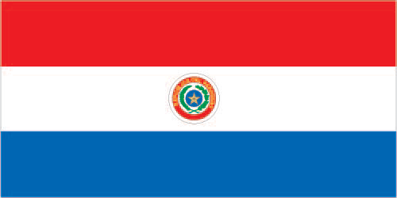

South America :: PARAGUAY
Introduction :: PARAGUAY
-
Paraguay achieved its independence from Spain in 1811. In the disastrous War of the Triple Alliance (1865-70) - between Paraguay and Argentina, Brazil, and Uruguay - Paraguay lost two-thirds of its adult males and much of its territory. The country stagnated economically for the next half century. Following the Chaco War of 1932-35 with Bolivia, Paraguay gained a large part of the Chaco lowland region. The 35-year military dictatorship of Alfredo STROESSNER ended in 1989, and, despite a marked increase in political infighting in recent years, Paraguay has held relatively free and regular presidential elections since the country's return to democracy.
Geography :: PARAGUAY
-
Central South America, northeast of Argentina, southwest of Brazil23 00 S, 58 00 WSouth Americatotal: 406,752 sq kmland: 397,302 sq kmwater: 9,450 sq kmcountry comparison to the world: 61about three times the size of New York state; slightly smaller than Californiatotal: 4,655 kmborder countries (3): Argentina 2,531 km, Bolivia 753 km, Brazil 1,371 km0 km (landlocked)none (landlocked)subtropical to temperate; substantial rainfall in the eastern portions, becoming semiarid in the far westgrassy plains and wooded hills east of Rio Paraguay; Gran Chaco region west of Rio Paraguay mostly low, marshy plain near the river, and dry forest and thorny scrub elsewheremean elevation: 178 melevation extremes: lowest point: junction of Rio Paraguay and Rio Parana 46 mhighest point: Cerro Pero 842 mhydropower, timber, iron ore, manganese, limestoneagricultural land: 53.8%arable land 10.8%; permanent crops 0.2%; permanent pasture 42.8%forest: 43.8%other: 2.4% (2011 est.)1,362 sq km (2012)most of the population resides in the eastern half of the country; to the west lies the Gran Chaco (a semi-arid lowland plain), which accounts for 60% of the land territory, but only 2% of the overall populationlocal flooding in southeast (early September to June); poorly drained plains may become boggy (early October to June)deforestation; water pollution; inadequate means for waste disposal pose health risks for many urban residents; loss of wetlandsparty to: Biodiversity, Climate Change, Climate Change-Kyoto Protocol, Desertification, Endangered Species, Hazardous Wastes, Law of the Sea, Ozone Layer Protection, Wetlandssigned, but not ratified: none of the selected agreementslandlocked; lies between Argentina, Bolivia, and Brazil; population concentrated in eastern and southern part of country
People and Society :: PARAGUAY
-
6,943,739 (July 2017 est.)country comparison to the world: 104noun: Paraguayan(s)adjective: Paraguayanmestizo (mixed Spanish and Amerindian) 95%, other 5%Spanish (official), Guarani (official)Roman Catholic 89.6%, Protestant 6.2%, other Christian 1.1%, other or unspecified 1.9%, none 1.1% (2002 census)Paraguay falls below the Latin American average in several socioeconomic categories, including immunization rates, potable water, sanitation, and secondary school enrollment, and has greater rates of income inequality and child and maternal mortality. Paraguay's poverty rate has declined in recent years but remains high, especially in rural areas, with more than a third of the population below the poverty line. However, the well-being of the poor in many regions has improved in terms of housing quality and access to clean water, telephone service, and electricity. The fertility rate continues to drop, declining sharply from an average 4.3 births per woman in the late 1990s to about 2 in 2013, as a result of the greater educational attainment of women, increased use of contraception, and a desire for smaller families among young women.Paraguay is a country of emigration; it has not attracted large numbers of immigrants because of political instability, civil wars, years of dictatorship, and the greater appeal of neighboring countries. Paraguay first tried to encourage immigration in 1870 in order to rebound from the heavy death toll it suffered during the War of the Triple Alliance, but it received few European and Middle Eastern immigrants. In the 20th century, limited numbers of immigrants arrived from Lebanon, Japan, South Korea, and China, as well as Mennonites from Canada, Russia, and Mexico. Large flows of Brazilian immigrants have been arriving since the 1960s, mainly to work in agriculture. Paraguayans continue to emigrate to Argentina, Brazil, Uruguay, the United States, Italy, Spain, and France.0-14 years: 24.56% (male 867,854/female 837,480)15-24 years: 19.29% (male 673,354/female 666,053)25-54 years: 41.08% (male 1,426,941/female 1,425,279)55-64 years: 7.95% (male 281,388/female 270,939)65 years and over: 7.12% (male 232,011/female 262,440) (2017 est.)total dependency ratio: 56.6youth dependency ratio: 47.2elderly dependency ratio: 9.4potential support ratio: 10.6 (2015 est.)total: 28.2 yearsmale: 28 yearsfemale: 28.5 years (2017 est.)country comparison to the world: 1361.18% (2017 est.)country comparison to the world: 9816.6 births/1,000 population (2017 est.)country comparison to the world: 1114.8 deaths/1,000 population (2017 est.)country comparison to the world: 198-0.1 migrant(s)/1,000 population (2017 est.)country comparison to the world: 105most of the population resides in the eastern half of the country; to the west lies the Gran Chaco (a semi-arid lowland plain), which accounts for 60% of the land territory, but only 2% of the overall populationurban population: 60.2% of total population (2017)rate of urbanization: 2.02% annual rate of change (2015-20 est.)ASUNCION (capital) 2.356 million (2015)at birth: 1.05 male(s)/female0-14 years: 1.04 male(s)/female15-24 years: 1.01 male(s)/female25-54 years: 1 male(s)/female55-64 years: 1.04 male(s)/female65 years and over: 0.88 male(s)/femaletotal population: 1.01 male(s)/female (2016 est.)22.9 yearsnote: median age at first birth among women 25-29 (2008 est.)132 deaths/100,000 live births (2015 est.)country comparison to the world: 64total: 18.7 deaths/1,000 live birthsmale: 22.1 deaths/1,000 live birthsfemale: 15.2 deaths/1,000 live births (2017 est.)country comparison to the world: 86total population: 77.4 yearsmale: 74.7 yearsfemale: 80.2 years (2017 est.)country comparison to the world: 721.9 children born/woman (2017 est.)country comparison to the world: 13479.4%note: percent of women aged 15-44 (2008)9.8% of GDP (2014)country comparison to the world: 261.29 physicians/1,000 population (2012)1.3 beds/1,000 population (2011)improved:urban: 100% of populationrural: 94.9% of populationtotal: 98% of populationunimproved:urban: 0% of populationrural: 5.1% of populationtotal: 2% of population (2015 est.)improved:urban: 95.5% of populationrural: 78.4% of populationtotal: 88.6% of populationunimproved:urban: 4.5% of populationrural: 21.6% of populationtotal: 11.4% of population (2015 est.)0.5% (2016 est.)country comparison to the world: 6519,000 (2016 est.)country comparison to the world: 79<1000 (2016 est.)degree of risk: intermediatefood or waterborne diseases: bacterial diarrhea, hepatitis A, and typhoid fevervectorborne disease: dengue fevernote: active local transmission of Zika virus by Aedes species mosquitoes has been identified in this country (as of August 2016); it poses an important risk (a large number of cases possible) among US citizens if bitten by an infective mosquito; other less common ways to get Zika are through sex, via blood transfusion, or during pregnancy, in which the pregnant woman passes Zika virus to her fetus (2016)20.3% (2016)country comparison to the world: 1002.6% (2012)country comparison to the world: 1055% of GDP (2012)country comparison to the world: 84definition: age 15 and over can read and writetotal population: 95.1%male: 95.8%female: 94.3% (2015 est.)total: 12 yearsmale: 12 yearsfemale: 13 years (2010)total: 13%male: 11.5%female: 12.3% (2015 est.)country comparison to the world: 95
Government :: PARAGUAY
-
conventional long form: Republic of Paraguayconventional short form: Paraguaylocal long form: Republica del Paraguaylocal short form: Paraguayetymology: the precise meaning of the name Paraguay is unclear, but it seems to derive from the river of the same name; one explanation has the name meaning "water of the Payagua" (an indigenous tribe that lived along the river)presidential republicname: Asunciongeographic coordinates: 25 16 S, 57 40 Wtime difference: UTC-4 (1 hour ahead of Washington, DC, during Standard Time)daylight saving time: +1hr, begins first Sunday in October; ends last Sunday in March17 departments (departamentos, singular - departamento) and 1 capital city*; Alto Paraguay, Alto Parana, Amambay, Asuncion*, Boqueron, Caaguazu, Caazapa, Canindeyu, Central, Concepcion, Cordillera, Guaira, Itapua, Misiones, Neembucu, Paraguari, Presidente Hayes, San Pedro14 May 1811 (from Spain)Independence Day, 14-15 May (1811) (observed 15 May)several previous; latest approved and promulgated 20 June 1992; amended 2011, 2014 (2016)civil law system with influences from Argentine, Spanish, Roman, and French civil law models; judicial review of legislative acts in Supreme Court of Justiceaccepts compulsory ICJ jurisdiction; accepts ICCt jurisdictioncitizenship by birth: yescitizenship by descent: at least one parent must be a native-born citizen of Paraguaydual citizenship recognized: yesresidency requirement for naturalization: 3 years18 years of age; universal and compulsory until the age of 75chief of state: President Horacio CARTES Jara (since 15 August 2013); Vice President Juan AFARA Maciel (since 15 August 2013); note - the president is both chief of state and head of governmenthead of government: President Horacio CARTES Jara (since 15 August 2013); Vice President Juan AFARA Maciel (since 15 August 2013)cabinet: Council of Ministers appointed by the presidentelections/appointments: president and vice president directly elected on the same ballot by simple majority popular vote for a single 5-year term; election last held on 21 April 2013 (next to be held in April 2018)election results: Horacio CARTES elected president; percent of vote - Horacio CARTES (ANR) 48.5%, Efrain ALEGRE (PLRA) 39%, Mario FERREIRO (AP) 6.2%, Anibal CARRILLO (FG) 3.5%, other 2.8%description: bicameral National Congress or Congreso Nacional consists of the Chamber of Senators or Camara de Senadores (45 seats; members directly elected in a single nationwide constituency by proportional representation vote to serve 5-year terms) and the Chamber of Deputies or Camara de Diputados (80 seats; members directly elected in 18 multi-seat constituencies - corresponding to the country's 17 departments and capital city - by proportional representation vote to serve 5-year terms)elections: Chamber of Senators - last held on 21 April 2013 (next to be held in April 2018); Chamber of Deputies - last held on 21 April 2013 (next to be held in April 2018)election results: Chamber of Senators - percent of vote by party/coalition - ANR 38.5%, PLRA 26.2%, FG 10.6%, PDP 6.4%, Avanza Pais 5.2%, UNACE 4%, PEN 3.5%, PPQ 2%, other 3.4%; seats by party/coalition - ANR 19, PLRA 13, FG 5, PDP 3, Avanza Pais 2, UNACE 2, PEN 1, PPQ 1; Chamber of Deputies - percent of vote by party/coalition - NA; seats by party/coalition - ANR 44, PLRA 27, Avanza Pais 2, PEN 2, UNACE 2, FG 1, PPQ 1, other 1highest court(s): Supreme Court of Justice or Corte Suprema de Justicia (consists of 9 justices divided 3 each into the Constitutional Court, Civil and Commercial Chamber, and Criminal Divisionjudge selection and term of office: justices proposed by the Council of Magistrates or Consejo de la Magistratura, a 6-member independent body, and appointed by the Chamber of Senators with presidential concurrence; judges appointed until mandatory retirement at age 75subordinate courts: appellate courts; first instance courts; minor courts, including justices of the peaceAsociacion Nacional Republicana - Colorado Party or ANR [Pedro ALLIANA]Avanza Pais coalition or AP [Adolfo FERREIRO]Broad Front coalition (Frente Guasu) or FG [Esperanza MARTINEZ]Movimiento Union Nacional de Ciudadanos Eticos or UNACE [Jorge OVIEDO MATTO]Partido del Movimiento al Socialismo or P-MAS [Camilo Ernesto SOARES Machado]Partido Democratica Progresista or PDP [Rafael FILIZZOLA]Partido Encuentro Nacional or PEN [Hermann RATZLAFFIN Klippemstein]Partido Liberal Radical Autentico or PLRA [Efrain ALEGRE]Partido Pais Solidario or PPS [Carlos Alberto FILIZZOLA Pallares]Partido Popular Tekojoja or PPT [Sixto PEREIRA Galeano]Patria Querida (Beloved Fatherland Party) or PPQ [Miguel CARRIZOSA]Ahorristas Estafados or AENational Coordinating Board of Campesino Organizations or MCNOC [Luis AGUAYO]National Federation of Campesinos or FNC [Marcial GOMEZ]National Workers Central or CNT [Secretary General Juan TORALES]Paraguayan Workers Confederation or CPTRoman Catholic ChurchUnitary Workers Central or CUT [Jorge Guzman ALVARENGA Malgarejo]CAN (associate), CD, CELAC, FAO, G-11, G-77, IADB, IAEA, IBRD, ICAO, ICC (national committees), ICCt, ICRM, IDA, IFAD, IFC, IFRCS, ILO, IMF, IMO, Interpol, IOC, IOM, IPU, ISO (correspondent), ITSO, ITU, ITUC (NGOs), LAES, LAIA, Mercosur, MIGA, MINURSO, MINUSTAH, MONUSCO, NAM (observer), OAS, OPANAL, OPCW, Pacific Alliance (observer), PCA, UN, UNASUR, UNCTAD, UNESCO, UNFICYP, UNIDO, Union Latina, UNISFA, UNMIL, UNMISS, UNOCI, UNWTO, UPU, WCO, WHO, WIPO, WMO, WTOchief of mission: Ambassador German Hugo ROJAS Irigoyen (since 28 December 2016)chancery: 2400 Massachusetts Avenue NW, Washington, DC 20008telephone: [1] (202) 483-6960 through 6962FAX: [1] (202) 234-4508consulate(s) general: Los Angeles, Miami, New Yorkchief of mission: Ambassador (vacant); Charge d'Affaires Hugo F. RODRIGUES, Jr. (since 20 January 2017)embassy: 1776 Avenida Mariscal Lopez, Casilla Postal 402, Asuncionmailing address: Unit 4711, DPO AA 34036-0001telephone: [595] (21) 213-715FAX: [595] (21) 213-728three equal, horizontal bands of red (top), white, and blue with an emblem centered in the white band; unusual flag in that the emblem is different on each side; the obverse (hoist side at the left) bears the national coat of arms (a yellow five-pointed star within a green wreath capped by the words REPUBLICA DEL PARAGUAY, all within two circles); the reverse (hoist side at the right) bears a circular seal of the treasury (a yellow lion below a red Cap of Liberty and the words PAZ Y JUSTICIA (Peace and Justice)); red symbolizes bravery and patriotism, white represents integrity and peace, and blue denotes liberty and generositynote: the three color bands resemble those on the flag of the Netherlands; one of only three national flags that differ on their obverse and reverse sides - the others are Moldova and Saudi Arabialion; national colors: red, white, bluename: "Paraguayos, Republica o muerte!" (Paraguayans, The Republic or Death!)lyrics/music: Francisco Esteban ACUNA de Figueroa/disputednote: adopted 1934, in use since 1846; officially adopted following its re-arrangement in 1934
Economy :: PARAGUAY
-
Landlocked Paraguay has a market economy distinguished by a large informal sector, featuring re-export of imported consumer goods to neighboring countries, as well as the activities of thousands of microenterprises and urban street vendors. A large percentage of the population, especially in rural areas, derives its living from agricultural activity, often on a subsistence basis. Because of the importance of the informal sector, accurate economic measures are difficult to obtain.On a per capita basis, real income has grown steadily over the past decade. The economy grew rapidly between 2003 and 2008 as strong world demand for commodities, combined with high prices and favorable weather, supported Paraguay's commodity-based export expansion. Paraguay is the sixth largest soy producer in the world. Drought hit in 2008, reducing agricultural exports and slowing the economy even before the onset of the global recession. The economy fell 3.8% in 2009, as lower world demand and commodity prices caused exports to contract. Severe drought and outbreaks of hoof-and-mouth disease in 2012 led to a brief drop in beef and other agricultural exports. Since 2014, however, Paraguay’s economy has grown at a 4% average annual rate due to strong production and high global prices, at a time when other countries in the region have contracted.The Paraguayan Government recognizes the need to diversify its economy and has taken steps in recent years to do so. In addition to looking for new commodity markets in the Middle East and Europe, Paraguayan officials have promoted the country’s low labor costs, cheap energy from its massive Itaipu Hydroelectric Dam, and single-digit tax rate on foreign firms. As a result, the number of factories operating in the country – mostly transplants from Brazil - has tripled since 2014.Political uncertainty, corruption, limited progress on structural reform, and deficient infrastructure are the main obstacles to long-term growth. Paraguay has been adverse to public debt throughout its history, but has recently changed its anti-debt policies to finance infrastructure improvements to attract foreign investment. Judicial corruption is endemic and is seen as the greatest barrier to attracting more foreign investment.$64.39 billion (2016 est.)$61.08 billion (2015 est.)$58.68 billion (2014 est.)note: data are in 2016 dollarscountry comparison to the world: 102$27.44 billion (2016 est.)4.1% (2016 est.)3% (2015 est.)4.7% (2014 est.)country comparison to the world: 57$9,400 (2016 est.)$9,200 (2015 est.)$9,000 (2014 est.)note: data are in 2016 dollarscountry comparison to the world: 14019.7% of GDP (2016 est.)15.8% of GDP (2015 est.)15.9% of GDP (2014 est.)country comparison to the world: 110household consumption: 67.4%government consumption: 11.7%investment in fixed capital: 16.3%investment in inventories: 0.3%exports of goods and services: 44.8%imports of goods and services: -40.5% (2016 est.)agriculture: 20%industry: 30.3%services: 49.7% (2016 est.)cotton, sugarcane, soybeans, corn, wheat, tobacco, cassava (manioc, tapioca), fruits, vegetables; beef, pork, eggs, milk; timbersugar processing, cement, textiles, beverages, wood products, steel, base metals, electric power10.4% (2016 est.)country comparison to the world: 113.383 million (2016 est.)country comparison to the world: 102agriculture: 26.5%industry: 18.5%services: 55% (2008)6% (2016 est.)5.8% (2015 est.)country comparison to the world: 8222.2% (2015 est.)lowest 10%: 1.5%highest 10%: 37.6% (2013 est.)51.7 (2014)53.2 (2009)country comparison to the world: 12revenues: $5.002 billionexpenditures: $5.418 billion (2016 est.)18.2% of GDP (2016 est.)country comparison to the world: 167-1.5% of GDP (2016 est.)country comparison to the world: 7522.4% of GDP (2016 est.)21.1% of GDP (2015 est.)country comparison to the world: 179calendar year4.1% (2016 est.)3.1% (2015 est.)country comparison to the world: 1665.5% (31 December 2012)6% (31 December 2011)country comparison to the world: 7618.08% (31 December 2016 est.)19.74% (31 December 2015 est.)country comparison to the world: 20$4.293 billion (31 December 2016 est.)$3.974 billion (31 December 2015 est.)country comparison to the world: 107$8.557 billion (31 December 2016 est.)$7.708 billion (31 December 2015 est.)country comparison to the world: 109$12.14 billion (31 December 2016 est.)$11.99 billion (31 December 2015 est.)country comparison to the world: 102$962.3 million (31 December 2012 est.)$958.1 million (31 December 2011 est.)$42 million (31 December 2010 est.)country comparison to the world: 107$460 million (2016 est.)$-462 million (2015 est.)country comparison to the world: 46$10.86 billion (2016 est.)$10.67 billion (2015 est.)country comparison to the world: 85soybeans, livestock feed, cotton, meat, edible oils, wood, leather, goldBrazil 35.4%, Argentina 10.5%, Russia 7.6%, Chile 6.1% (2016)$9.617 billion (2016 est.)$10.15 billion (2015 est.)country comparison to the world: 96road vehicles, consumer goods, tobacco, petroleum products, electrical machinery, tractors, chemicals, vehicle partsChina 27.3%, Brazil 24.3%, Argentina 14.3%, US 7.1% (2016)$6.881 billion (31 December 2016 est.)$5.939 billion (31 December 2015 est.)country comparison to the world: 85$16.48 billion (31 December 2016 est.)$16.16 billion (31 December 2015 est.)country comparison to the world: 98$5.276 billion (31 December 2016 est.)$6.054 billion (31 December 2015 est.)country comparison to the world: 103$591.3 million (31 December 2016 est.)$303.8 million (31 December 2015 est.)country comparison to the world: 91guarani (PYG) per US dollar -5,680.7 (2016 est.)5,680.7 (2015 est.)5,160.4 (2014 est.)4,462.2 (2013 est.)4,424.9 (2012 est.)
Energy :: PARAGUAY
-
population without electricity: 100,000electrification - total population: 98%electrification - urban areas: 99%electrification - rural areas: 96% (2013)55.19 billion kWh (2015 est.)country comparison to the world: 5210.47 billion kWh (2015 est.)country comparison to the world: 9241.13 billion kWh (2015 est.)country comparison to the world: 50 kWh (2016 est.)country comparison to the world: 1868.87 million kW (2015 est.)country comparison to the world: 660.2% of total installed capacity (2015 est.)country comparison to the world: 2140% of total installed capacity (2015 est.)country comparison to the world: 16299.3% of total installed capacity (2015 est.)country comparison to the world: 20.5% of total installed capacity (2015 est.)country comparison to the world: 1520 bbl/day (2016 est.)country comparison to the world: 1810 bbl/day (2014 est.)country comparison to the world: 1750 bbl/day (2014 est.)country comparison to the world: 1760 bbl (1 January 2017 es)country comparison to the world: 1790 bbl/day (2014 est.)country comparison to the world: 18638,000 bbl/day (2015 est.)country comparison to the world: 1160 bbl/day (2014 est.)country comparison to the world: 18937,610 bbl/day (2014 est.)country comparison to the world: 940 cu m (2013 est.)country comparison to the world: 1830 cu m (2013 est.)country comparison to the world: 1220 cu m (2013 est.)country comparison to the world: 1650 cu m (2013 est.)country comparison to the world: 1730 cu m (1 January 2014 es)country comparison to the world: 1843.9 million Mt (2013 est.)country comparison to the world: 135
Communications :: PARAGUAY
-
total subscriptions: 368,000subscriptions per 100 inhabitants: 5 (July 2016 est.)country comparison to the world: 109total: 7,489,474subscriptions per 100 inhabitants: 109 (July 2016 est.)country comparison to the world: 102general assessment: the fixed-line market is a state monopoly and fixed-line telephone service is meager; principal switching center is in Asunciondomestic: deficiencies in provision of fixed-line service have resulted in a rapid expansion of mobile-cellular services fostered by competition among multiple providers; Internet market also open to competitioninternational: country code - 595; satellite earth station - 1 Intelsat (Atlantic Ocean) (2016)6 privately owned TV stations; about 75 commercial and community radio stations; 1 state-owned radio network (2010).pytotal: 3,524,045percent of population: 51.3% (July 2016 est.)country comparison to the world: 101
Transportation :: PARAGUAY
-
number of registered air carriers: 1inventory of registered aircraft operated by air carriers: 5annual passenger traffic on registered air carriers: 452,004annual freight traffic on registered air carriers: 1,641,624 mt-km (2015)ZP (2016)799 (2013)country comparison to the world: 9total: 15over 3,047 m: 31,524 to 2,437 m: 7914 to 1,523 m: 5 (2017)total: 7841,524 to 2,437 m: 23914 to 1,523 m: 290under 914 m: 471 (2013)total: 30 kmstandard gauge: 30 km 1.435-m gauge (2014)country comparison to the world: 133total: 32,059 kmpaved: 4,860 kmunpaved: 27,199 km (2010)country comparison to the world: 953,100 km (primarily on the Paraguay and Paran River systems) (2012)country comparison to the world: 32total: 19by type: cargo 13, container 3, passenger 1, petroleum tanker 1, roll on/roll off 1foreign-owned: 6 (Argentina 5, Netherlands 1) (2010)country comparison to the world: 96river port(s): Asuncion, Villeta, San Antonio, Encarnacion (Parana)
Military and Security :: PARAGUAY
-
1.25% of GDP (2016)1.42% of GDP (2015)1.29% of GDP (2014)1.28% of GDP (2013)1.3% of GDP (2012)country comparison to the world: 54Armed Forces Command (Commando de las Fuerzas Militares): Army, National Navy (Armada Nacional, includes Marine Corps, Naval Aviation, and Coast Guard), Paraguayan Air Force (Fuerza Aerea Paraguay, FAP), Logistics Command, War Materiel Directorate (2012)18 years of age for compulsory and voluntary military service; conscript service obligation is 12 months for Army, 24 months for Navy; volunteers for the Air Force must be younger than 22 years of age with a secondary school diploma (2012)
Transnational Issues :: PARAGUAY
-
unruly region at convergence of Argentina-Brazil-Paraguay borders is locus of money laundering, smuggling, arms and illegal narcotics trafficking, and fundraising for violent extremist organizationsmajor illicit producer of cannabis, most or all of which is consumed in Brazil, Argentina, and Chile; transshipment country for Andean cocaine headed for Brazil, other Southern Cone markets, and Europe; weak border controls, extensive corruption and money-laundering activity, especially in the Tri-Border Area; weak anti-money-laundering laws and enforcement